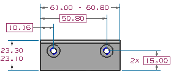

创建多个显示实例
-
在模型视图节点下方，双击 PMI 然后展开它。
-
在图形窗口中，选择所有位于顶面平面内的 PMI 数据。

已经将上图中的某些 PMI 数据隐藏以使显示清楚。
-
在图形窗口中，右击选定的数据并选择显示→在视图中...。
-
在在视图中显示对话框中，选中 pmi_top 的复选框并点击确定。
当您使用这个方法来创建多个显示实例时，所有实例都与 PMI 父对象相关，您可要删除单个显示实例，而不用从所有视图中移除实例。
-
将 pmi_top 设为工作视图。

-
展开 pmi_top 视图节点以查看结果。
您在步骤 2中选择的 PMI 对象已经被添加到该视图节点中。